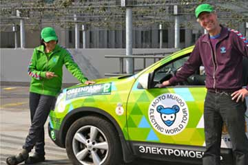
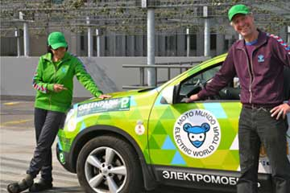
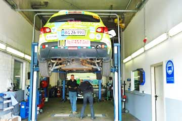
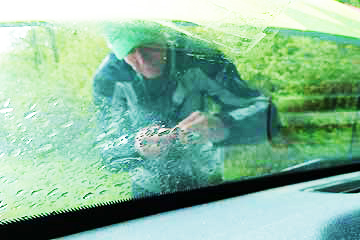

Uha, det var spændende at komme til det store parkeringshus GreenPark i Rotterdam. Først blev jeg kørt helt op på taget på 16. etage, hvor jeg blev fotograferet, imens Nina og Hjalte hoppede som lopper foran mig. Bagefter fik jeg strøm nede i nederste etage.Tænk engang, de som havde GreenPark vidste ikke engang at der var sådan en god stikkontakt, lige parat til en elbil. Nina og Hjalte havde et værelse på et sjovt hotel henne på hjørnet, så jeg stod alene i hele to nætter. Det er jeg ikke vant til, men der var ikke noget at klage over. Ingen forstyrrede mig så jeg sugede strøm hele den første nat, og stod og så på alle de biler der kørte ud og ind af parkeringshuset resten af tiden.
Grønne.

Hundredevis af plantepotter og et stort vandingssystem med regnvand skal få planterne til at gro, så det store parkeringshus om tre år vil være dækket af planter. Grønne blev kørt op på taget hvorfra der var en fin udsigt over Rotterdam. Bagefter blev Grønne parkeret, og Hjalte og jeg fik en fantastisk gourmet-middag på en nærliggende restaurant sammen med Ronald, Richard og Michiel. På det sjove Hotel Bazar, som lå lige overfor, var der bestilt et værelse til os. Hvis du vil se flere fotos fra Greenparks picasa side så klik på teksten nede under.
Nina


På en gåtur i den store by Aachen genså vi Karl den Stores imponerende domkirke fra år 800. Den smukke grønne og gyldne mosaik mindede meget om mosaikken i den store moske i Damaskus, bygget hundrede år tidligere. Senere så vi et par gamle hollandske møller og en kanal med sluseværk. Husene lå tæt langs vejen og i haverne var buske og træer klippet i facon, espallieret og så hårdt diciplinerede at vi næsten syntes at det var for meget med al den orden. Men folk er jo flinke og vi kom ind på campingpladsen ved byen Soerendonk, selv om klokken var over 18 og bommen nede. Solen synker, stæren fløjter og nogle sultne myg prøver forgæves at stikke os. Vi har taget meget tøj på fordi temperaturen er faldet til 10 grader. Om tre uger vil vi være tilbage i Danmark igen, forhåbentlig i god behold, og med Grønne uden buler.
Nina

Horst fandt et velvilligt værksted i nabolaget som kunne udskifte Grønnes vandpumpe, og klokken 14.30 var den nye pumpe installeret og vi kunne køre videre. Værkstedets ejer sagde at der ikke var noget usædvanligt i at vandpumpens små kontakter var erroderet bort efter så lang tids dagligt slid. Mit tøj begynder også at falde fra hinanden, og mine sko blev smidt i en skraldespand da jeg skiftede til sandaler for en måned siden. For at komme fremad i lige linie valgte vi at køre på motorvej indtil vi drejede af for at overnatte hos vores venner Bernd Tesch og Patti nær Aachen. At vende tilbage dertil var næsten som at komme hjem, og Grønne fik god trefaset strøm som den stod og gumlede på indtil den var fuldt opladet.
Nina

Heldigvis var vi tidligt oppe og jeg havde pakket teltet sammen inden regnen skyllede ned. Ude på motorvejen kunne
Grønne pludselig ikke køre. En sikring var igen sprunget, og der kom røg og damp op fra motorrummet. Hjalte kunne
nu lokalisere miséren til vandpumpen. Stikket var brændt fast og han var nødt til at klippe ledningen over for at få den
koblet fra. Grønne kørte igen indtil motoren måtte have en kølepause. Vi var selv blevet ret kolde og klamme, så vi
satte os ind på et cafeteria og spiste for en gangs skyld et færdiglavet måltid. Midt på dagen fik Grønne god strøm, og
vi adskillige kopper kaffe, hos BMW i Mannheim. Udenfor regnede og haglede det. Vi nåede tilsidst frem til Horst og
Konstanze i Budenheim nær Mainz, hvor vi havde en dejlig aften med inspirerende samtaler og god mad og vin.
Nina

50 mænd fra Cirkus Knie havde fra den tidlige morgen travlt med at opstille telte, stalde og indhegninger til dyrene. 10 lamaer stod på græs, og mange heste vrinskede. En venlig østrig campist gav et par melodier på sit alpehorn, der havde en forbløffende mild klang.
På Brusa fabrikken, som er kendt for sine højkvalitets-produkter til elbiler, blev vi godt modtaget af Arno Mathoy, en af grundlæggerne. Arno gav os en rundvisning. Alt så fint og eksklusivt ud. Fabrikken har udviklet en range-extender, som er en lille benzinmotor bygget sammen med elmotoren, så bilen kan køre videre på generatorstrøm efter at batteristrømmen er brugt op. Meget mere kompakt end range-extenderen i GM Volt, som vi så i Detroit. En anden genial opfindelse er en extra bremsepedal som aktiverer regenerativ bremsning. Direktør Arno, som selv er elbil- entusiast og tidligere racerkører, fik en prøvetur i Grønne, og vi fik lov at prøve Brusas lynhurtige grønne racer. Efter et smut gennem Østrig fik Grønne tre timer trefaset strøm fra et VW værksted i Leutkirch, for at kunne køre de 282 km til Stuttgart. Imens spadserede vi i byen, hvor vi købte grønne kasketter. Om aftenen kunne Grønne pludselig ikke køre. Problemet skyldtes tilsyneladende en 12 V sikring, som Hjalte skiftede. Det var over midnat før vi ankom til campingpladsen i Stuttgart, men heldet var med os. Lågen var åben, og vi kunne campere lige ud for et vaskehus med god stærk strøm til Grønne fra stikket til en tørretumbler.
Nina
Kære venner!
Schweiz er et fantastisk flot land! Hele dagen har vi kørt på små veje med udsigt til dybe dale og bjerge med høje snedækkede tinder. Æbletræerne blomstrer og bøgen er sprunget ud, vi hører fuglesangen ind gennem bilens åbne vinduer. Et sted standsede vi ved en svævebane, som trak os helt op til hvor sneen begyndte. På en grøn bakke dækket med blomster satte vi os på en bænk med stor udsigt til bjerge, dale og søer. I Lichtenstein lå fyrstens borg på en bjergside, men der var ingen adgang for besøgende. Dagen sluttede på en lille hyggelig campingplads i Buchs, hvor vi sent på aftenen fik selskab af 30 beboelsesvognene fra det kæmpemæssige cirkus Knie.
Nina og Hjalte
Vi ville egentlig have besøgt Louis Palmer, organisatoren af Zero Race, som vi havde truffet i Shanghai. Men da han ikke var hjemme aftalte vi at mødes med hans partner Julianna. Vi mødtes på en cafe og snakkede om rejser, bøger og fremtidsplaner. Louis er ved at planlægge et nyt race for elektriske biler i september 2011. Vi ville gerne være med, vi er blevet bidt af at køre rally. Men vi har selv en mission i Danmark, hvor vi vil tage rundt og holde foredrag om vores jordomrejse i elbil.
Det blev sent inden vi kom tilbage til den lille hytte vi havde indlogeret os i på campingpladsen. Det var skønt igen at ligge på rigtige madrasser!
Nina
Da vi tog afsted fra campingpladsen var Grønne kun opladet til 67%. Så den skulle have en lang frokostpause. I den fine lille by Champagnole fandt vi alt hvad vi kunne ønske os. En værkstedsejer, Philippe Cuynet, som selv kørte rally, gav Grønne strøm i tre timer. Da vi vandrede ned ad hovedgaden havde en restaurant fået en ny kok, som serverede stegte ørreder til halv pris. Efter en gåtur ned til floden hvor der var et gammelt kraftværk, vendte vi tilbage til byen. På turistkontoret sad en plakat som reklamerede med gratis adgang til internettet. Der sad vi så i en time og lagde tekst og fotos på hjemmesiden.
Da vi kørte ind i Schweiz så vi at husene blev større og mere moderne. Grønne havde ladet op, så vi uden bekymring kunne køre til en campingplads i Neuchatel med udsigt over en stor sø og ordentlig strøm af schweizisk kvalitet! Jeg lavede mad, Hjalte rejste teltet og Grønne stod og sang.


Grønne holder aldrig fri. Enten kører den, eller også lader den. Når Hjalte og jeg spiser frokost står Grønne til opladning, som regel på et bilværksted. Grønne er i sving hele tiden dag og nat, uge efter uge, måned efter måned, det er en fantastisk bil! Og det er en pragtfuld oplevelse at køre langsomt igennem det europæiske forår. Lidt nervepirrende blev det da den campingplads vi kørte til var lukket, men heldigvis havde vi strøm nok til at køre videre til den næste. Der var strømmen usædvanlig svag, men vi måtte tage det som det var.